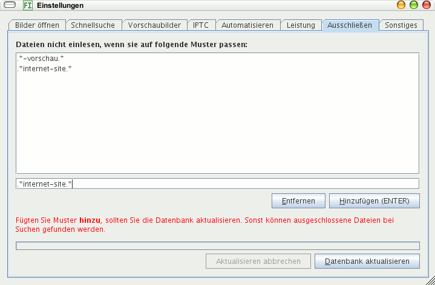

Hier können Sie reguläre Ausdrücke eingeben für Bilder, die nicht angezeigt werden sollen.
Informieren Sie sich über reguläre Ausdrücke im Web, falls Sie diese nicht kennen. Für die meisten Fälle reicht die Zeichenfolge Punkt + Stern (Asterik) .*, die bedeutet: Hier kann nichts stehen oder beliebig viel. Wollen Sie alle Bilder im Verzeichnis Testfotos ausschließen erreichen Sie das durch den Ausdruck .*Testfotos.*.
Wählen Sie ein ausgeschlossenes Verzeichnis an, werden keine Bilder mehr angezeigt. Sie sollten anschließend die Option Datenbank aktualisieren nutzen, damit die Bilder auch aus der Datenbank gelöscht werden, sonst erscheinen diese bei Suchen, Kategorien und Bildsammlungen.
